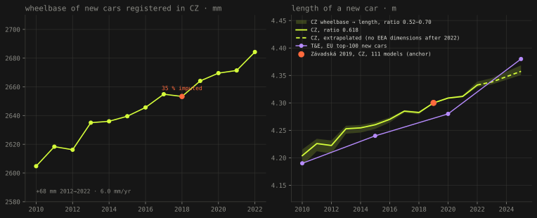
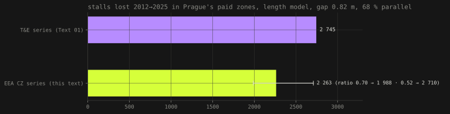
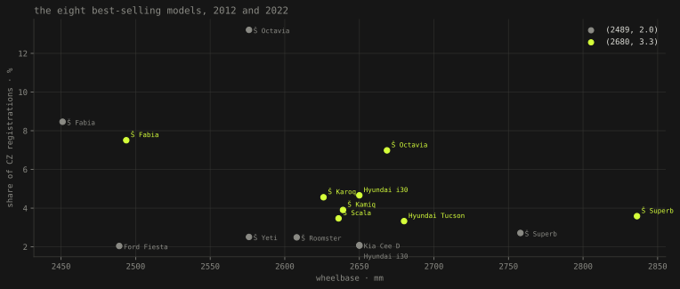

Text 02 · Prague · 15 September 2026 · a check on Text 01
Parking II: the fleet, measured
Text 01 said Prague lost about 2 745 stalls to longer cars, and borrowed the growth of the cars from a European series. Its own limitations section named the next step: measure it on cars registered in Czechia. This is that step. The growth to 2022 survives to the millimetre. The number does not, because the last three years were an assumption, and an assumption is where the two sources part.
- cars measured
- 2 501 048 every M1 registered in CZ 2010–2022, EEA CO2 monitoring
- wheelbase, new cars 2012→2022
- +68 mm 2616 → 2684 · 6.0 mm a year
- length, same years
- +11.0 cm CZ, via wheelbase · T&E series +11.0 cm
- stalls lost 2012→2025
- 2 263 1.33 % · Text 01 said 2 745 · band 1 988–2 710
What Text 01 assumed
The capacity model in Text 01 needs one input it could not measure: how much longer the cars parked in Prague got between 2012 and 2025. It used the Transport & Environment series for the hundred best-selling models in the EU, which grows 4.21 → 4.38 m over those years, and checked it against the single Czech measurement that exists, Závadská's weighted average of the 111 best-selling new cars of 2019, 4.30 m against the series' 4.271. One point is a sanity check, not a series. The limitations section said so and named the source that could do better: the EEA's CO2 monitoring database, which holds every new passenger car registered in every member state, with its wheelbase and track2.
What the EEA data is, and is not
The EEA publishes one row per registered car (or, until 2016, per group of identical cars with a count), with the member state, make, model, mass, wheelbase, axle track, fuel and CO2. For Czechia that is 2 501 048 passenger cars over 2010–2022. It is the only dimension series that is actually about the Czech market rather than the European one2. It also has four properties a reader should know before trusting a line drawn through it, all of them found by counting, all of them handled in the open3.
Every year is in the table twice. A provisional and a final version, both flagged; taking both doubles the registrations to 490 000 in 2019. Only final rows are used, which puts the count back at 233 603, in line with the registry. Two years have impossible averages. Without a plausibility filter, 2014 has a mean axle track of 2 657 mm and 2018 a mean wheelbase of 2 473 mm; rows outside 1 800–3 800 mm (wheelbase), 1 200–1 900 mm (track) and 600–3 500 kg are counted and excluded. 2018 is a third empty, and not at random. 81 215 cars, 35 % of the year, carry no wheelbase; every one of them is a Škoda whose make arrived as ?KODA, the Š lost in someone's export. Left as it is, the year's average is computed without Fabias and Octavias and jumps to 2 684 mm. The fix is to normalise the make and fill each model's wheelbase from its other years, which brings 2018 to 2653 mm, between its neighbours. The series ends in 2022. From the 2023 files onward the EEA no longer publishes wheelbase or track for any Czech car (every value is null), so the last three years of the comparison, exactly the years Text 01's number depends on most, cannot be measured here either.
Wheelbase is not length. There is a published ratio, 0.618 on 697 vehicles, with real spread from 0.52 to 0.70 and an Octavia at 0.5724. So the ratio is used for one thing only: to turn the change in wheelbase into a change in length, anchored on the one Czech length that was measured, 4.30 m in 2019. The band in the figures is the ratio's spread. Track is reported as track; no published relation to overall width exists, and none is invented.
The growth to 2022 was right

The wheelbase of a new car registered in Czechia grew from 2616 mm in 2012 to 2684 mm in 2022, 68 mm in ten years, 6.0 mm a year on the fitted trend, with no year stepping out of line once 2018 is repaired. Through the ratio that is 11.0 cm of length (band 9.7–13.1). The T&E series, interpolated to the same years, grows 11.0 cm. Two independent sources, one about a hundred European models and one about every Czech registration, agree on the decade to a tenth of a centimetre. That is the part of Text 01 that holds, and it holds better than it had any right to on one anchor point3.
The mass of a new Czech car tells the same story with a twist: 1366 kg in 2012, flat to 2018, then 1461 kg by 2022, most of the gain in the last four years, which is electrification and the SUVs arriving together. Track, where it is measured, did not move: 1560 mm in 2012, 1554 mm in 2022, and 2022 has track for only 45 % of its cars, so the last point is weaker than the rest. The Czech car got longer without getting wider between the wheels, which is the mechanism Text 01 rested on, and the one dimension where the European series and the Czech data cannot be compared at all, because no published relation turns track into overall width.
The number was not, because of 2023–2025
Put the Czech series into the same fleet model (cohorts weighted by a survival curve calibrated on the average age of the Czech fleet, 13.6 years in 2012 and 16.7 in 2025) and the same length model of capacity (pitch = car length + 0.82 m gap, 68 % of stalls parallel), with nothing else changed1. The car in the street grows from 4.098 to 4.195 m, and the zones lose 2 263 stalls, 1.33 %, with the ratio's spread giving 1 988 to 2 710. Text 01's 2 745 sits just above the top of that band.

The whole difference is in the years the Czech data cannot see. Up to 2022 the two series are the same line. After 2022 the T&E series accelerates to 2 cm a year (4.28 → 4.38 m between 2020 and 2025, published in 2026 from a hundred models), while the Czech trend extended at its own pace adds 1.0 cm a year. Over three years that is a few centimetres of new-car length, which the survival curve dilutes into a few millimetres of fleet length, which the pitch model turns into about 482 stalls. Neither number is wrong; one is measured to 2022 and extrapolated, the other is a European projection. The honest statement of the result is now: between about 2 000 and 2 750 stalls, most likely 2 260, and the last three years decide which end.
Why Czechia grows the way it does

The composition is the thing the European series cannot show. In 2012 one car in eight registered in Czechia was an Octavia and one in twelve a Fabia; with the Roomster and the Yeti, four Škodas made a quarter of the market. In 2022 the Octavia is at 7 %, the Fabia at 7.5 %, and the space between them is filled by cars that did not exist: Karoq, Kamiq, Scala, and a Hyundai Tucson at 3.3 %. Škoda's share did not fall, it rose a little; what changed is which Škodas. The Octavia itself grew (wheelbase 2576 → 2669 mm across a generation), the Fabia barely did, and the market moved from the long-wheelbase Octavia to a spread of compact SUVs whose wheelbase sits between the two. The Czech fleet lengthened by a mix shift as much as by any one model getting bigger, which is why a series built on European best-sellers can match the decade and still miss the next three years: those depend on what Czechs buy, not on what Europe's hundred models measure.
What was checked, and what was not
Checked: three new tests on the EEA modules (the broken make is normalised, a model's missing wheelbase is filled from its other years and the coverage is reported, the length series is anchored on 2019 and extrapolates with the fitted trend in both directions), on top of the 27 tests of Text 01, all passing; the registration counts per year against the final EEA files; the 2018 repair against its neighbours. Not checked, and stated: the ratio 0.618 is European, not calibrated on Czech models, hence the band; the fleet age distribution is modelled, not observed, as in Text 01; the EEA rows are registrations, not the cars actually parked in Prague's zones, whose mix is not published. Everything here is produced by src/eea_cz.py and src/eea_series.py in the parking repository from the EEA endpoint; the figures are rendered from the same JSON, and no number on this page was typed3.
References
- Šandová, B. (2026): How many parking spaces Prague lost to bigger cars (Text 01): the length model of capacity, the fleet survival model, the gap of 0.82 m, the 68 % parallel share and the anchor count of 168 456 stalls; Transport & Environment (2026), Ever-bigger? Car size at a crossroads, p. 26, for the EU top-100 series; Závadská (2020) for the 2019 Czech average of 1.80 × 4.30 m over 205 994 cars.
- European Environment Agency: Monitoring of CO2 emissions from passenger cars, Regulation (EU) 2019/631, via Discodata, tables
[CO2Emission].[latest].[co2cars](2010–2021, final rows) and[co2cars_2022Fv26]; fields MS, Mk, Cn, Ct, R, W (mm), At1 (mm), M (kg). Queried 15 September 2026, aggregated server-side per year, make and model. The 2023–2025 files (co2cars_2023Fv28,2024Fv30,2025Pv31) contain no wheelbase or track for CZ. - Šandová, B. (2026): parking repository,
src/eea_cz.py(extraction, cleaning, counts) andsrc/eea_series.py(imputation, length series, fleet and capacity runs); output eea_cz.json; figures bytools/parking2_figures.pyin the site repository. Tests: 30, of which 3 new. - Holder, D. et al. (2021): Systematic analysis of changing vehicle exterior dimensions, Proceedings of the Design Society (ICED21), 10.1017/pds.2021.553: wheelbase/length mean and median 0.618 on 697 vehicles, regression R² 0.748 overall; observed range 0.52–0.70.